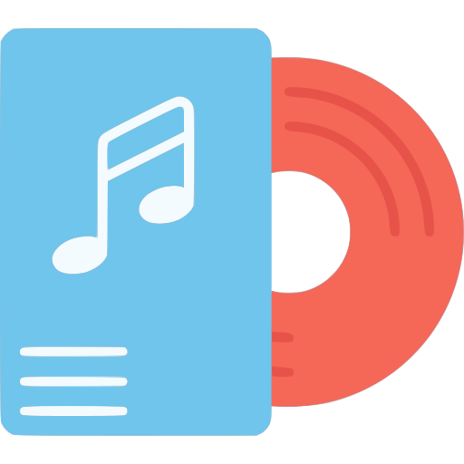

Добро пожаловать в SoundStats
Веб-приложение, тесно связанное с вашим аккаунтом Spotify.
Управляйте вашими плейлистами, изучайте самые популярные треки и многое другое!
Топ-5 треков
| # |
Обложка |
Описание |
Ссылка |
| 1 |
 |
Paint The Town Red - Doja Cat |
|
| 2 |
 |
Seven (feat. Latto) (Explicit Ver.) - Jung Kook, Latto |
|
| 3 |
 |
Cruel Summer - Taylor Swift |
|
| 4 |
 |
Slime You Out (feat. SZA) - Drake, SZA |
|
| 5 |
 |
vampire - Olivia Rodrigo |
|
Особенности
Просматривайте свои наиболее прослушиваемые треки и исполнителей

Изучайте свои жанровые предпочтения

Создавайте персонализированные плейлисты используя различные алгоритмы

Создавайте плейлисты на основе самых популярных треков в мире
И многое другое!